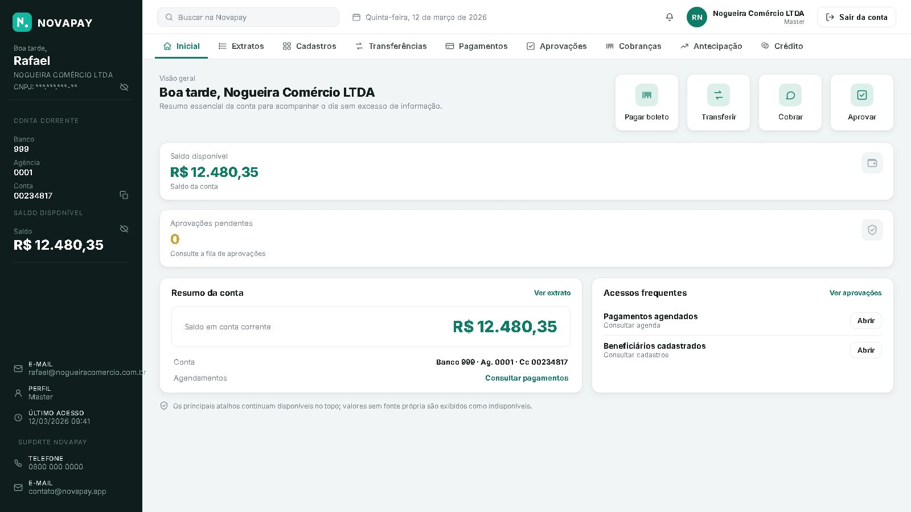
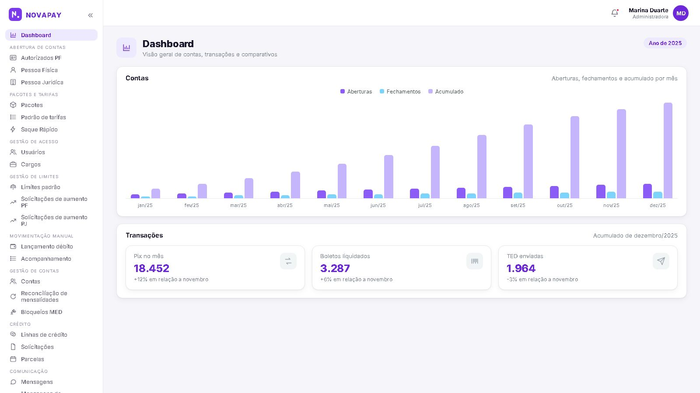
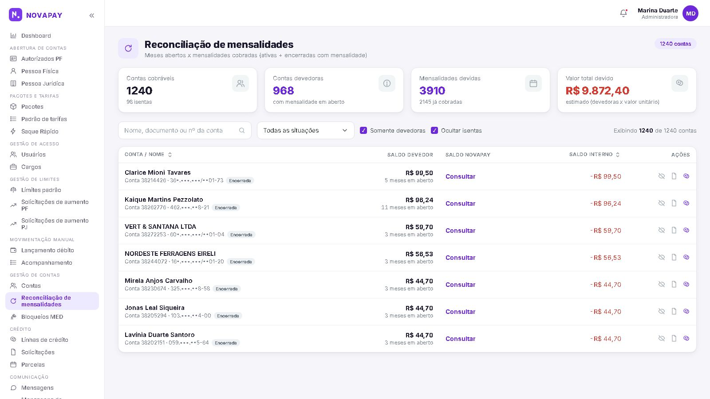

12 publicações prontas, com legendas, carrosséis, roteiros de Reels, imagens, ordem de publicação e chamadas para ação.
Versão 1.0 · Agosto de 2026Uso interno
Direção editorial
O conteúdo precisa vender confiança antes de vender serviço
Objetivo
Fazer gestores e donos de empresas reconhecerem um problema real, perceberem competência na Cabral Labs e iniciarem uma conversa.
Público
CTOs, Heads de Produto, gestores de operações e donos de empresas com sistemas, integrações ou processos importantes para o negócio.
Quatro pilares
40%
Problemas
Planilhas críticas, tarefas manuais, projetos travados, integrações frágeis e sistemas difíceis de evoluir.
30%
Provas
Cases, telas, métricas, decisões tomadas e colaboração necessária para chegar à produção.
20%
Educação
Requisitos, QA, arquitetura, priorização e como contratar desenvolvimento com menos risco.
10%
Bastidores
Trajetória, aprendizados e construção da Cabral Labs como operação enxuta e próxima.
Regra editorial: escrever para quem compra ou gerencia software. Evitar transformar o perfil em uma sequência de tutoriais de framework para desenvolvedores.
Cadência sustentável
Duas publicações por semana, durante seis semanas.
LinkedIn: publicar primeiro no perfil de Liam; adaptar ou republicar na página da Cabral Labs.
Instagram: publicar na conta da Cabral Labs; usar Stories para bastidores e perguntas.
Somente uma publicação a cada quatro deve ter CTA comercial direto.
Calendário de seis semanas
Ordem recomendada
Semana
Momento
Publicação
Formato principal
1
Terça
1. Apresentação da Cabral Labs
Carrossel
1
Quinta
2. De tecnologia X para problema real
Texto + Reel
2
Terça
3. Case: aplicação financeira
Carrossel com telas
2
Quinta
4. Quando uma planilha vira sistema
Carrossel educativo
3
Terça
5. Case: redução de licenças
Carrossel de resultado
3
Quinta
6. Projetos travam antes do código
Texto/carrossel
4
Terça
7. Reescrever ou evoluir um legado
Carrossel
4
Quinta
8. QA não é a última etapa
Carrossel
5
Terça
9. Checklist para integrações
Carrossel salvável
5
Quinta
10. Tour pela aplicação financeira
Reel de 45 segundos
6
Terça
11. IA em processo desorganizado
Carrossel/opinião
6
Quinta
12. O que sustenta 99,9%
Texto + Reel
Distribuição
1×
Ideia central e argumento original.
2×
Adaptação: LinkedIn e Instagram.
3×
Reuso: texto, carrossel e Story/Reel.
Não espere perfeição visual. Use um template único com fundo claro ou preto, tipografia forte, azul da marca e no máximo uma ideia principal por slide.
Lançamento · Semana 1
Apresentação da Cabral Labs
LinkedInInstagramCarrossel
01
Objetivo: apresentar a empresa sem parecer apenas “mais uma software house”.
Slide
Texto exato
Visual e imagem
1
Software que funciona em produção. Sem atalhos.
Fundo preto, logo no canto superior e detalhe azul. Sem fotografia.
2
A Cabral Labs nasce para transformar processos complexos em sistemas eficientes, rastreáveis e previsíveis.
Captura do hero do portfólio dentro de uma moldura de navegador.
3
Construímos. Sistemas e produtos digitais conectados ao problema real.
Ícone de escudo/sistema. Fundo claro.
4
Integramos. Sistemas e fluxos que precisam trocar informações sem depender de trabalho manual.
Diagrama simples de dois blocos conectados.
5
Automatizamos. Processos repetitivos, difíceis de rastrear e sujeitos a erros.
Fluxo manual → automação → resultado.
6
Evoluímos. Sistemas existentes que precisam ganhar estabilidade, capacidade e velocidade de entrega.
Seta de evolução; sem imagem de banco de fotos.
7
Da descoberta à produção, com requisitos, desenvolvimento e QA próximos do cliente. Conheça a Cabral Labs.
Logo central e “link no perfil”.
Legenda — LinkedIn
Por muito tempo, eu me apresentei pelo conjunto de tecnologias que sabia usar.
Hoje, prefiro começar pelo problema que precisa ser resolvido.
A Cabral Labs nasce dessa mudança: construir, integrar e evoluir sistemas que fazem parte da operação real de uma empresa.
Da descoberta à produção, reunimos requisitos, desenvolvimento e QA em uma estrutura enxuta e próxima do cliente.
Este é o início de uma nova fase. Nos próximos conteúdos, vou compartilhar projetos, decisões, erros evitados e aprendizados de sistemas que chegaram à produção.
Conheça a Cabral Labs no link do perfil.
Legenda — Instagram
Tecnologia é meio. O objetivo é resolver um problema real.
A Cabral Labs constrói, integra e evolui sistemas para operações que precisam de eficiência, rastreabilidade e previsibilidade.
Este é o começo. Nos próximos posts, vamos mostrar os projetos e as decisões por trás das entregas.
#sistemas #automacao #integracaodesistemas #tecnologia
Lançamento · Semana 1
De tecnologia X para problema real
LinkedIn textoReel 40s
02
Objetivo: explicar a mudança de posicionamento e humanizar a marca.
Texto completo — LinkedIn
Durante boa parte da minha carreira, eu respondia “o que você faz?” listando tecnologias.
Node, Angular, cloud, mensageria e por aí vai.
Isso ajuda em uma entrevista técnica. Para uma empresa com um problema real, diz muito pouco.
Quem possui um processo manual não está procurando Node. Está procurando menos retrabalho.
Quem tem uma integração travada não quer apenas uma API. Quer previsibilidade para a operação.
Quem possui um sistema instável não está comprando um framework. Está tentando reduzir risco.
Depois de mais de sete anos trabalhando com sistemas em produção, essa foi uma das mudanças mais importantes na minha forma de enxergar a profissão.
É também o princípio por trás da Cabral Labs: tecnologia é uma decisão da solução, não o produto que vendemos.
Qual problema de tecnologia mais consome tempo na sua operação hoje?
Roteiro exato — Reel
0–4s
Imagem Liam olhando para a câmera.
Fala: “Por muito tempo, eu respondia o que eu fazia listando tecnologias.”
4–10s
Texto na tela: Node, Angular, Cloud.
“Isso funciona em entrevista técnica. Para uma empresa com um problema real, diz muito pouco.”
10–22s
B-roll: planilha, fluxo e painel.
“Quem tem processo manual quer menos retrabalho. Quem tem integração travada quer previsibilidade. Quem tem sistema instável quer reduzir risco.”
22–34s
Captura do portfólio.
“Foi dessa mudança que surgiu a Cabral Labs: começar pelo problema e escolher a tecnologia depois.”
34–40s
Logo + pergunta.
“Qual problema de tecnologia mais consome tempo na sua operação hoje?”
Legenda — Instagram
Empresas não compram frameworks. Compram menos risco, menos retrabalho e mais previsibilidade.
Foi dessa mudança de visão que surgiu a Cabral Labs.
Qual processo ou sistema mais consome tempo na sua empresa hoje?
Captação: esta publicação não oferece serviço. Ela abre conversa por meio da pergunta final.
Prova · Semana 2
Case da aplicação financeira
LinkedIn documentoInstagram carrossel
03
Objetivo: demonstrar capacidade com telas, escopo e resultados, sem posicionar a empresa apenas como fintech.
Slide
Texto exato
Visual e imagem exata
1
Por trás de uma aplicação financeira em operação
app-inicial.jpeg com overlay preto de 55%; título por cima.
2
Uma operação com PIX, TED, boletos, onboarding, pagamentos em lote, crédito e painel administrativo.
app-login.jpeg ocupando o lado direito.
3
Experiência do cliente Saldo, extratos, cobranças, pagamentos e comprovantes em um único fluxo.
app-extratos.jpeg.
4
Operações em escala Pagamentos em lote exigem validação, retorno, rastreabilidade e tratamento de exceções.
Visão administrativa A operação precisa enxergar contas, transações e variações sem depender do banco de dados.
admin-dashboard.jpeg.
6
Reconciliação Mensalidades, pendências e valores devidos centralizados para decisão operacional.
admin-reconciliacao-mensalidades.jpeg.
7
Resultados da plataforma 99,9% de disponibilidade 99% de aprovação automática no onboarding 95% menos bugs críticos
Slide tipográfico; números grandes, sem print.
8
A Cabral Labs liderou o desenvolvimento e a evolução da aplicação. Infraestrutura e ambientes foram operados em colaboração com uma equipe especializada.
Diagrama “Aplicação ↔ Infraestrutura”; não usar fotografia.
9
Um sistema importante para sua operação precisa evoluir? Vamos entender o cenário.
Logo, fundo preto e CTA “link no perfil”.
Post 03 · Legendas
Copy para publicação
Legenda — LinkedIn
Uma aplicação financeira não é apenas uma interface para consultar saldo.
Por trás dela existem integrações, regras de negócio, pagamentos, onboarding, rotinas administrativas, rastreabilidade e disponibilidade.
Neste projeto, a Cabral Labs liderou o desenvolvimento e a evolução da aplicação, incluindo módulos financeiros, aplicativo do cliente e painel administrativo.
Alguns resultados da plataforma:
— 99,9% de disponibilidade
— 99% de aprovação automática no onboarding
— 95% de redução de bugs críticos
A infraestrutura e a operação dos ambientes foram realizadas em colaboração com uma equipe especializada. Sistemas críticos são entregas coletivas — atribuição clara também é parte de uma boa engenharia.
As telas do carrossel pertencem à operação real, com dados, nomes e identidade adaptados por sigilo.
Sua empresa possui um sistema que precisa evoluir ou uma integração importante travada?
Legenda — Instagram
Uma aplicação financeira vai muito além da interface.
PIX, boletos, onboarding, pagamentos em lote, painel administrativo, rastreabilidade e disponibilidade precisam funcionar como uma única operação.
Neste projeto, a Cabral Labs liderou o desenvolvimento e a evolução da aplicação. A infraestrutura foi conduzida em colaboração com uma equipe especializada.
Arraste para conhecer algumas telas e resultados.
Dados e identidade adaptados por sigilo.
#software #fintech #sistemas #integracoes #automacao

Usar na capa com overlay escuro.

Usar no slide de visão administrativa.
Antes de publicar: ampliar cada print e verificar nomes, documentos, e-mails, saldos, chaves, IDs, URLs e marcas. Se houver dúvida, ocultar ou substituir.
Educação · Semana 2
Quando uma planilha vira sistema
Carrossel salvável
04
Slide
Texto exato
Visual
1
5 sinais de que sua planilha já virou um sistema — só que sem controle
Planilha estilizada em fundo claro.
2
1. Poucas pessoas entendem como ela funciona. Se quem criou sair, a operação para.
Ícone de pessoa-chave.
3
2. Existem várias versões do mesmo arquivo. Ninguém sabe qual contém o dado correto.
Arquivos duplicados.
4
3. Erros são descobertos tarde. Não há validação, histórico ou alerta automático.
Alerta vermelho discreto.
5
4. A equipe copia informações entre ferramentas. O mesmo dado é digitado mais de uma vez.
Setas entre planilha, e-mail e sistema.
6
5. A planilha participa de uma decisão importante. Financeiro, cliente ou operação dependem dela.
Ícone de decisão/risco.
7
Planilhas são excelentes ferramentas. O problema começa quando viram infraestrutura invisível. Qual desses sinais existe na sua empresa?
Checklist final + logo pequeno.
Legenda — LinkedIn
Planilhas não são o problema.
O problema começa quando uma planilha se torna essencial para a operação, mas continua sem permissões, histórico, validações e integração.
Nesse ponto, ela já funciona como um sistema — apenas sem a estrutura de um sistema.
Antes de automatizar, vale medir frequência, quantidade de pessoas envolvidas, custo dos erros e impacto de uma interrupção.
Qual desses sinais você mais encontra nas empresas?
Legenda — Instagram
Planilha não é inimiga. Infraestrutura invisível é.
Arraste para identificar cinco sinais de que um processo precisa ser estruturado.
Salve para revisar com sua equipe.
Prova · Semana 3
Case de governança de licenças
CarrosselSem print do sistema
05
Slide
Texto exato
Visual
1
Como uma automação ajudou a reduzir cerca de R$ 1 milhão por ano
“R$ 1M/ano” em destaque; fundo preto.
2
O problema Licenças corporativas sem uso continuavam gerando custo porque a identificação e a decisão eram manuais.
Ícones de licenças acumuladas.
3
Não bastava cancelar. Era necessário notificar, validar o uso, respeitar regras e registrar a decisão.
Fluxo com quatro etapas.
4
A solução Um sistema para identificar inatividade, notificar colaboradores e acompanhar o ciclo antes do cancelamento.
Resultado aproximadamente R$ 1 milhão por ano em redução de custo operacional.
Número grande + seta de redução.
7
Automação não é apenas fazer mais rápido. É tornar o processo mensurável, rastreável e governável.
Três palavras em destaque.
8
Existe um custo recorrente escondido em algum processo da sua empresa?
CTA suave + logo.
Legenda — LinkedIn
Uma licença sem uso parece um custo pequeno quando observada isoladamente.
Em escala, vira um vazamento recorrente e quase invisível.
Neste projeto, a Cabral Labs construiu um sistema para identificar licenças inativas, notificar colaboradores, aplicar regras de validação e acompanhar a decisão antes do cancelamento.
O resultado foi uma redução de custo operacional próxima de R$ 1 milhão por ano.
O ganho não veio apenas do cancelamento. Veio de transformar uma decisão manual em um processo rastreável e governável.
Qual custo recorrente ainda permanece invisível na sua operação?
Legenda — Instagram
Pequenos custos recorrentes se tornam grandes quando ninguém consegue enxergá-los em escala.
Neste case, automação e governança ajudaram a reduzir aproximadamente R$ 1 milhão por ano.
Arraste para entender o processo.
Autoridade · Semana 3
Projetos travam antes do código
LinkedIn textoCarrossel
06
Slide
Texto exato
Visual
1
Muitos projetos de software travam antes da primeira linha de código.
Cursor piscando em tela vazia.
2
O sintoma virou requisito. “Precisamos de um dashboard” não explica qual decisão precisa melhorar.
Dashboard desfocado + pergunta.
3
Ninguém definiu sucesso. Sem critério de aceite, toda entrega parece incompleta.
Checklist vazio.
4
As exceções apareceram tarde. O fluxo feliz foi desenhado; a operação real ficou de fora.
Caminho simples bifurcando.
5
Decisões não têm responsável. O time espera enquanto custo e prazo continuam correndo.
Relógio + cadeira vazia.
6
Descoberta não é burocracia. É reduzir incerteza antes que ela vire retrabalho.
Funil “incerteza → clareza”.
7
Antes de perguntar “quanto tempo leva?”, pergunte: qual problema, para quem e como saberemos que foi resolvido?
Slide tipográfico.
Legenda — LinkedIn
Quando um projeto atrasa, a explicação costuma terminar no desenvolvimento.
Mas muitos atrasos começam antes:
— o sintoma foi tratado como requisito;
— ninguém definiu sucesso;
— as exceções apareceram tarde;
— decisões ficaram sem responsável.
Código não elimina essas incertezas. Normalmente apenas as torna mais caras.
Uma boa descoberta não precisa durar meses. Precisa esclarecer problema, restrições, responsáveis e critérios de aceite.
Qual desses pontos mais atrasa projetos na sua experiência?
Legenda — Instagram
Nem todo atraso de software começa no desenvolvimento.
Arraste para ver quatro problemas que travam um projeto antes do código — e salve para a próxima descoberta.
Autoridade · Semana 4
Reescrever ou evoluir?
Carrossel de decisão
07
Slide
Texto exato
Visual
1
Seu sistema precisa ser reescrito ou apenas evoluído?
Tela dividida: reescrever × evoluir.
2
Reescrever parece mais limpo. Mas também recria anos de regras, exceções e conhecimento operacional.
Prédio sendo reconstruído.
3
Evolua quando: o núcleo funciona, os problemas estão localizados e é possível criar limites claros.
Checklist verde.
4
Considere reescrever quando: a arquitetura impede qualquer mudança segura e o custo de manter supera o de migrar.
Checklist azul.
5
Antes de decidir, meça: frequência de incidentes, tempo para entregar, cobertura de testes e dependências críticas.
Quatro indicadores.
6
Planeje convivência e migração. O sistema antigo raramente pode desaparecer de uma vez.
Duas linhas convergindo.
7
A pergunta não é “qual código é mais bonito?”. É qual caminho reduz risco para a operação.
Slide tipográfico.
8
Tem um sistema difícil de evoluir? A Cabral Labs pode ajudar a diagnosticar o cenário.
Logo + CTA.
Legenda — LinkedIn
Reescrever um sistema legado é uma decisão de negócio apresentada como decisão técnica.
O código novo parece atraente, mas o sistema antigo carrega regras, exceções e conhecimento que nem sempre estão documentados.
Por isso, a decisão precisa considerar risco operacional, frequência de incidentes, velocidade atual de entrega, dependências e estratégia de migração.
Às vezes, a resposta é reescrever. Muitas vezes, é criar limites e evoluir por partes.
O melhor código é irrelevante se a migração colocar a operação em risco.
Legenda — Instagram
Sistema legado não significa automaticamente “jogar tudo fora”.
Arraste para comparar evolução e reescrita pela ótica do risco operacional.
Educação · Semana 4
QA não é a última etapa
Carrossel
08
Slide
Texto exato
Visual
1
QA não deveria ser a última etapa de um projeto.
Linha do tempo com QA no começo, meio e fim.
2
Quando QA entra apenas no final, encontra problemas quando corrigi-los já custa mais.
Curva de custo crescente.
3
Na descoberta: QA ajuda a identificar exceções, ambiguidades e critérios de aceite.
Lupa sobre requisitos.
4
Durante a construção: valida entregas pequenas antes que erros se acumulem.
Blocos sendo verificados.
5
Antes da produção: confirma fluxos críticos, regressões e comportamento das integrações.
Checklist de produção.
6
Depois da publicação: acompanha o uso real e transforma incidentes em aprendizado.
Gráfico + feedback.
7
Qualidade não é um portão no final. É uma responsabilidade durante toda a entrega.
Mensagem final + logo discreto.
Legenda — LinkedIn
Tratar QA como “a pessoa que testa no final” cria um problema previsível: a qualidade só aparece quando quase tudo já foi decidido.
QA gera mais valor quando participa da descoberta, ajuda a escrever critérios de aceite, valida entregas progressivas e acompanha a entrada em produção.
O objetivo não é criar mais etapas. É encontrar incerteza enquanto ainda é barato resolvê-la.
Na Cabral Labs, requisitos, desenvolvimento e QA fazem parte da mesma esteira.
Legenda — Instagram
QA não é um portão no final do projeto.
É uma responsabilidade que começa na descoberta e continua depois da publicação.
Arraste para ver onde QA reduz mais risco.
Educação · Semana 5
Checklist para integrações
Carrossel salvável
09
Slide
Texto exato
Visual
1
7 perguntas antes de integrar dois sistemas
Dois blocos conectados; fundo azul.
2
1. Quem é dono de cada dado? Defina a fonte oficial antes de sincronizar.
Banco A × Banco B.
3
2. O que acontece quando um sistema estiver fora? Timeout, fila, repetição ou intervenção manual?
Fluxo com falha controlada.
4
3. A operação pode ser repetida? Idempotência evita cobranças e registros duplicados.
Seta repetida bloqueada.
5
4. Como erros serão rastreados? Logs sem contexto não explicam impacto operacional.
Log ligado a uma transação.
6
5. Existem limites e picos? Volume médio não representa fechamento, campanha ou lote.
Gráfico com pico.
7
6. Como será testado? 7. Quem decide em uma exceção?
Ambiente de teste + responsável.
8
Uma integração não termina quando a API responde 200. Ela termina quando a operação consegue confiar no fluxo.
Slide final tipográfico.
Legenda — LinkedIn
Conectar duas APIs pode ser simples. Integrar duas operações raramente é.
Além do caminho feliz, uma integração precisa responder quem é dono do dado, como recuperar falhas, impedir duplicidade, rastrear erros e lidar com picos.
Uma resposta 200 confirma uma chamada. Não confirma que o processo terminou corretamente.
Salve este checklist para a próxima integração.
Legenda — Instagram
Integração não é apenas fazer uma API conversar com outra.
Arraste para revisar sete perguntas que evitam problemas em produção.
Prova visual · Semana 5
Tour pela aplicação financeira
Reel 45s9:16
10
Objetivo: transformar os prints em uma demonstração curta, sem virar vídeo técnico.
0–3s
Imagem app-inicial.jpeg, zoom lento.
Texto/fala: “Uma aplicação financeira é muito mais que uma tela de saldo.”
3–9s
app-extratos.jpeg.
“O cliente precisa consultar movimentações, entradas, saídas e comprovantes com clareza.”
9–16s
app-pagamentos-lote-pix.jpeg.
“Pagamentos em lote exigem validação, rastreabilidade e tratamento de exceções.”
16–23s
app-credito-linhas.jpeg.
“Crédito e antecipações adicionam regras e estados que precisam permanecer consistentes.”
23–30s
admin-dashboard.jpeg.
“No backoffice, a operação precisa enxergar contas, volumes e transações.”
30–36s
admin-reconciliacao-mensalidades.jpeg.
“E reconciliar pendências sem depender de consultas manuais.”
36–42s
Números animados.
“A plataforma alcançou 99,9% de disponibilidade e reduziu bugs críticos em 95%.”
42–45s
Logo + URL/link no perfil.
“Cabral Labs. Software que funciona em produção.”
Direção de edição
Tela vertical 9:16; encaixar os prints horizontais dentro de uma moldura, sem cortar informações importantes.
Adicionar zoom de 3% a 5% e destacar com círculo apenas a área mencionada.
Usar voz original; música instrumental baixa e sem direitos autorais.
Legendas embutidas e mensagem principal longe das bordas.
Legenda — Instagram/LinkedIn
Um passeio rápido por algumas partes de uma aplicação financeira real: experiência do cliente, pagamentos, crédito, backoffice e reconciliação.
A Cabral Labs liderou o desenvolvimento e a evolução da aplicação. A infraestrutura e os ambientes foram conduzidos em colaboração com uma equipe especializada.
Dados, nomes e identidade foram adaptados por sigilo.
Opinião · Semana 6
IA em processo desorganizado
CarrosselReel opcional
11
Slide
Texto exato
Visual
1
IA aplicada a um processo desorganizado só automatiza a desorganização.
Frase grande; fundo preto.
2
Se entrada, regra e responsável mudam toda semana, a tecnologia não possui uma verdade para seguir.
Fluxo com setas conflitantes.
3
Antes da IA, esclareça: qual decisão será apoiada e qual resultado será medido.
Pergunta → decisão → métrica.
4
Organize os dados. Informação incompleta ou contraditória gera respostas aparentemente corretas.
Dados limpos × dados ruins.
5
Defina limites. O que pode ser automático? O que exige validação humana?
IA + pessoa com fronteira.
6
Comece pequeno. Valide uma decisão ou tarefa recorrente antes de automatizar todo o processo.
Um bloco destacado no fluxo.
7
IA é uma ferramenta dentro da solução. O produto continua sendo o resultado operacional.
Logo discreto + frase.
Legenda — LinkedIn
Colocar IA em um processo mal definido não elimina a confusão. Apenas aumenta a velocidade e a escala dela.
Antes de escolher modelo ou ferramenta, é preciso definir decisão, dados, limites, validação humana e resultado esperado.
Em muitos casos, a primeira melhoria nem é IA. É organizar o processo e tornar seus estados visíveis.
IA deve fazer parte da solução quando gera valor concreto — não porque precisa aparecer na apresentação.
Legenda — Instagram
IA não conserta um processo que ninguém consegue explicar.
Arraste para ver o que precisa existir antes da automação inteligente.
Autoridade · Semana 6
O que sustenta 99,9%
LinkedIn textoReel 35s
12
Texto completo — LinkedIn
99,9% de disponibilidade não é resultado apenas de um código bem escrito.
É o resultado conjunto de decisões de aplicação e infraestrutura:
— tratamento de falhas e exceções;
— observabilidade e alertas;
— capacidade de recuperar operações;
— publicação segura;
— infraestrutura preparada;
— pessoas responsáveis por reagir quando algo foge do esperado.
Na aplicação financeira apresentada pela Cabral Labs, o desenvolvimento foi liderado por nós e a infraestrutura foi conduzida em colaboração com uma equipe especializada.
Essa divisão não diminui a entrega. Ela mostra como sistemas críticos realmente são construídos: responsabilidades claras e colaboração entre competências.
Disponibilidade não é uma funcionalidade isolada. É uma propriedade de toda a operação.
Roteiro — Reel
0–4s
Liam em quadro.
“99,9% de disponibilidade não vem apenas de código bem escrito.”
4–15s
Palavras entrando na tela.
“Vem de tratamento de falhas, observabilidade, recuperação, publicação segura e infraestrutura preparada.”
15–25s
admin-dashboard.jpeg em moldura.
“Neste projeto, a Cabral Labs liderou a aplicação e trabalhou com uma equipe especializada em infraestrutura.”
25–35s
Diagrama aplicação + infra.
“Sistemas críticos são construídos com responsabilidades claras e colaboração.”
Legenda — Instagram
Disponibilidade não é uma funcionalidade isolada.
É uma propriedade construída por aplicação, infraestrutura, observabilidade e operação trabalhando juntas.
Biblioteca visual
Onde usar cada imagem disponível
Arquivo
Uso recomendado
Evitar
logo.png
Capas, encerramentos e assinatura discreta.
Logo grande em todos os slides.
perfil.png
Post de trajetória, bastidores e capa de artigo pessoal.
Usar como decoração em conteúdo técnico.
app-inicial.jpeg
Capa do case e abertura do tour.
Mostrar sem explicar o valor da tela.
app-extratos.jpeg
Conteúdo sobre rastreabilidade e experiência do cliente.
Deixar informações sensíveis legíveis.
app-pagamentos-lote-pix.jpeg
Integrações, escala, validações e exceções.
Prometer que toda a disponibilidade depende dessa tela.
app-pagamentos-boleto.jpeg
Pagamentos e diversidade de fluxos.
Usar isoladamente sem contexto.
app-credito-linhas.jpeg
Regras de negócio e estados de crédito.
Expor taxas, documentos ou nomes reais.
admin-dashboard.jpeg
Backoffice, operação e observabilidade de negócio.
Chamar de observabilidade técnica se for apenas dashboard operacional.
Prova para integrações, escala e tratamento de lote.

Prova para backoffice, reconciliação e rastreabilidade.
Operação semanal
Checklist de publicação e medição
Antes de publicar
O gancho fala de um problema ou resultado?
Existe somente uma ideia principal?
A linguagem é compreensível para um gestor?
A afirmação pode ser comprovada?
O print teve dados sensíveis removidos?
A atribuição entre aplicação e infraestrutura está clara?
O texto foi revisado por uma pessoa?
O CTA combina com o nível de consciência do post?
Depois de publicar
Responder comentários com perguntas reais, não apenas “obrigado”.
Registrar alcance, salvamentos, compartilhamentos, visitas ao perfil e conversas iniciadas.
Reaproveitar posts com muitos salvamentos como artigo, checklist ou anúncio.
Não concluir que um tema falhou por uma única publicação; testar gancho e formato.
Métrica principal por tipo
Problema e educação
Salvamentos, compartilhamentos e comentários de pessoas do público desejado.
Case e prova
Visitas ao perfil, cliques no portfólio e mensagens recebidas.
Bastidores
Respostas, reconexões e qualidade das conversas.
CTA comercial
Cenários enviados, conversas qualificadas e propostas — não curtidas.
Critério final: a publicação deve ajudar alguém a reconhecer um problema, tomar uma decisão melhor ou confiar mais na capacidade da Cabral Labs.
Fontes de formato
LinkedIn Help: posts, documentos, artigos, imagens e vídeos. Meta for Business: carrosséis para histórias/processos e Reels verticais com mensagem na área segura. As práticas de formato mudam; revisar as centrais oficiais antes de impulsionar conteúdo.